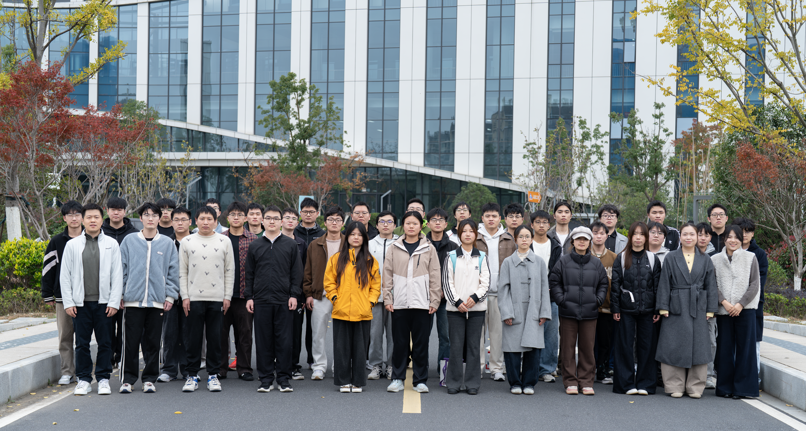
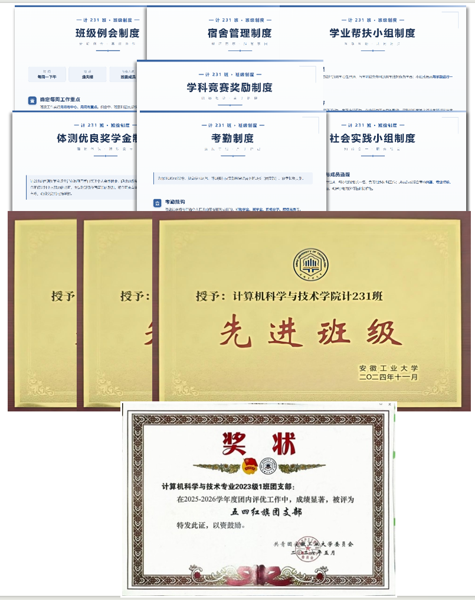
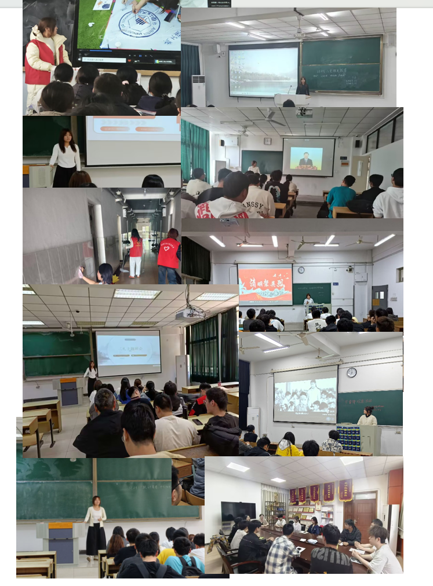
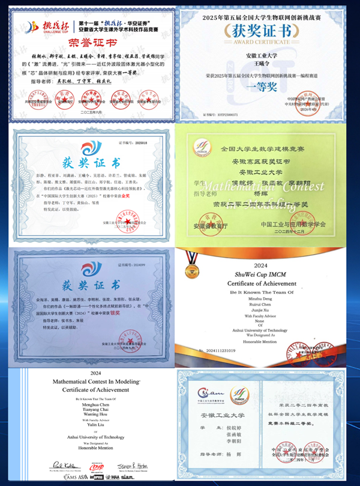
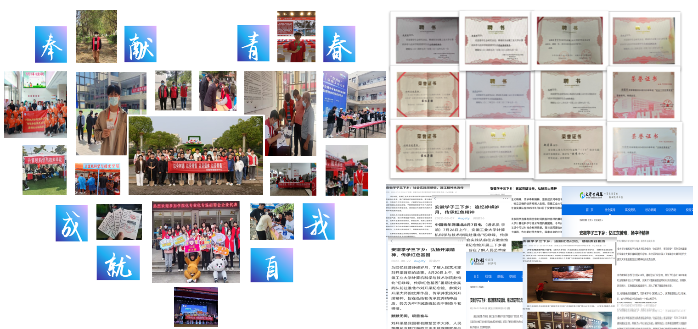
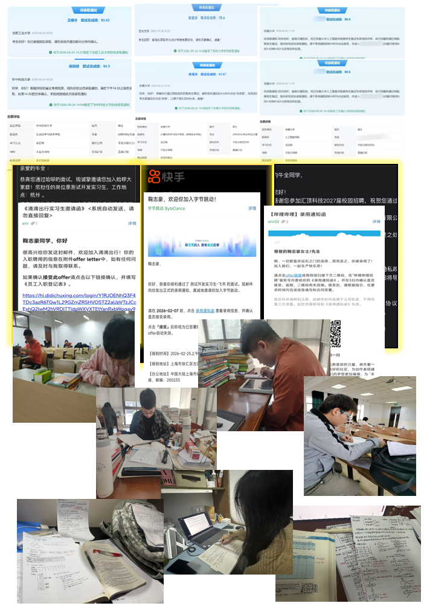

94.87%
英语四级通过率 (年级第1)
75项
科创竞赛获奖总数
78.09
平均学分绩 (年级第1)
100%
体测合格率 / 志愿参与率

关于我们
2023级计算机1班
我们是由39名同学组成的班集体，其中有5名党员。这个网页记录了大家大学四年的经历，有刚入学时的军训，有一起熬夜打比赛、做项目的日子，也有去社区做志愿和一起在操场玩闹的瞬间。大学四年就像写一段代码，从建文件夹、定规则开始，到中间不停地找Bug、修Bug，再到最后打包上线、各奔东西。我们把这段过程整理在这里，算是给这四年交一份完整的答卷。
班级成长时间轴
01
程序初始化
班级架构与制度（准备环境、组建团队）
以制度规范班级管理，以团结凝聚奋进力量。班级坚持制度建设与人文关怀相结合，建立班委分工负责制、寝室长负责制，完善班级公约、学业帮扶、民主监督、班务公开等工作机制。落实学业预警、评奖评优公开评议和体测激励制度，营造规范有序、民主和谐、团结互助的班级氛围。
连续3年
校先进班级
五四红旗
团支部
宿舍建设成果
4
校文明宿舍
3
学风优良宿舍
7
班级所在宿舍

02
配置运行参数
“三航”工程与思想引领（定好方向、守住底线）
以红色信仰校准青春航向，以先锋力量引领全面成长。班级构建“班主任、辅导员导航，党员领航，团员青年启航”的思想引领体系，坚持党建带团建、团建促班建，推动理论学习、主题教育和青年实践有机融合。
38场
主题班会/团日
100%
活动参与覆盖率
先锋领航 · 六人推免
- 侯皖婷 华中科技大学
- 赵星辰 苏州大学
- 王曦令 合肥工业大学
- 何思雨 安徽大学
- 邓敏珠 安徽大学
- 余海洋 安徽大学

03
代码调试，实战练兵
学风、科创、文体与安全（反复测试、打磨技术）
以优良学风筑牢成才根基，以创新竞赛激发青春潜能。班级坚持以学促赛、以赛促创，持续完善学业帮扶、朋辈互助和竞赛经验分享机制。依托数学建模、程序设计等竞赛平台，推动课堂学习向创新实践延伸。上课、刷题、打比赛，就像写代码、找bug、反复调试，提升专业本领。
5国际级奖项
14国家级奖项
44省级奖项

04
功能上线，服务输出
社会实践、学生工作与志愿服务（落地应用、服务他人）
以知行合一拓展成长边界，以五育融合书写青春华章。班级坚持德智体美劳全面发展，将专业学习与文体建设、劳动教育、社会实践、志愿服务有机融合，引导同学们走出课堂、深入校园、服务社会。学好技术不是只存电脑里，把功能上线，用技术做志愿、做服务。
体育强身
新生杯足球赛冠军
体育文化节排球前三
体育文化节乒乓球前三
班级篮球赛季军
美育润心
志愿微电影最佳导演奖
心理话剧“剧与情融”二等奖
“五四大合唱”活动
院诗朗诵比赛
劳动砺志
劳动教育周清扫教学楼
“雷锋月”宿舍关怀活动
校园绿植养护实践
以劳树德植树活动
志愿同行
志愿服务超 1000 小时
参加志愿公益活动 200 余次
累计无偿献血 30 人次
社会实践参与率 100%

05
复盘迭代，持续更新
典型事例与毕业去向（回看不足、规划下一阶段）
以动态迭代优化成长路径，以多元发展奔赴青春理想。班级坚持以学生成长需求为导向，依托学业帮扶、科研指导、升学交流和就业服务等机制，推动精准化、个性化发展引导，帮助同学们明确奋斗目标、找准发展方向。

console — 运行结果
> Running final_compilation.exe ...
> [SUCCESS] 0 errors, 0 warnings.
以青春为代码，以奋斗为编译器
_ 持续运行，向阳成长